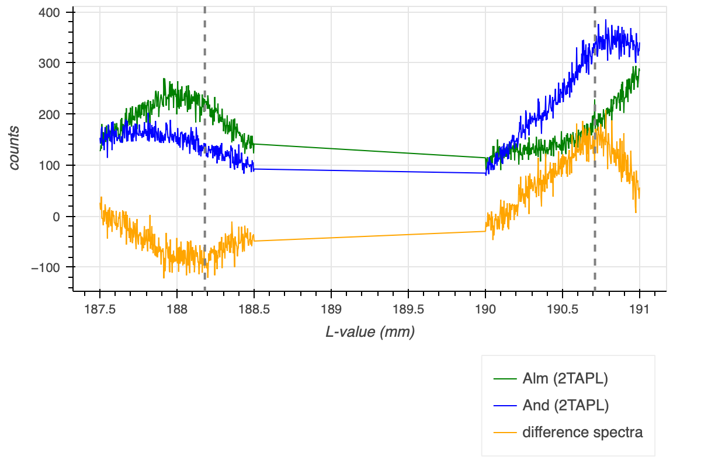
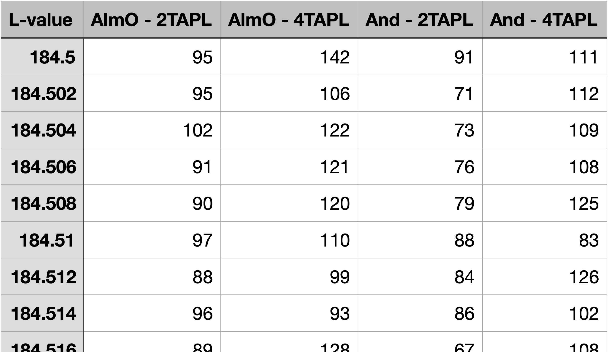
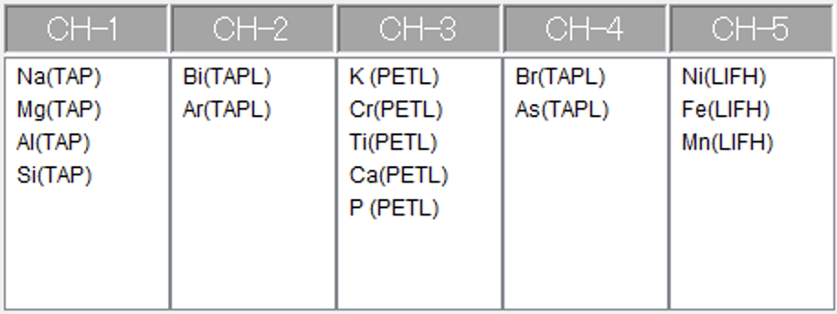

EPMA Measurement
Determining Analyser Crystal Positions
The flank method requires measurements on the FeLa and FeLb flanks rather than on their respective peaks. The ideal positions of the analyser crystals are best determined using a difference spectra, as described in the previous section. For garnet, this is best produced from a qualitative almandine and and andradite scan. It is, however, not required to record full spectra, as small intervals across the expected minima and maxima of the difference spectra are sufficient. Sufficient step size and dwell time – i.e., the counting time at each step – can be comparatively small, e.g., a step size of 3 µm and a dwell time of 300 ms. Figure 1 shows such segmented spectra with an interval for FeLa from 187.5 to 188. 5 mm, and for FeLb from 190 to 191 mm, as well as the resulting difference spectra. A high current of e.g., 300 nA is advisable, to obtain higher count rates. The sole measurement time will then be approx. 7 min, i.e., recording the required spectra should take about 10 min, if predefined measurement recipes are used.

The flank data reduction program has a tool to determine analyser crystal positions (‘Crystal Positioning’ in ‘Tools’). Figure 2 shows how a csv table needs to be prepared for this tool. The ‘Datasets’ section further provides a test dataset for download that also serves as a template.

Segmented Fe spectra are sufficient to determine analyser crystal positions, e.g., using the one from the Tools section in the data reduction program.
EPMA Set-Up
The flank method requires measuring the FeLa, FeLb flanks, as well as the Fe-concentration, e.g., on FeKa. The FeLa and FeLb flank measurement positions need to be input manually, after these have been determined as described above. The flank measurement set-ups in the EPMA measurement program might be labelled with element names that are never or only very rarely used. For the FeLb line, this could be Bi or Br and vor La Ar or As.
The FeLa and FeLb lines can be measured using a TAP-crystal, ideally a large-type TAPL cyrstal for better count rates, as the Fe L-lines are comparatively weak. Figure 3 shows a possible EPMA flank measurement set-up, in which the FeLa and FeLb lines are measured using the TAPL crystal of spectrometer 2 (2TAPL), and redundantly also on 4TAPL, to validate the results obtained with 2TAPL (or vice versa).

The selected Bi in Figure 3 represents the FeLb flank. The X-ray line as well as the order are as random as the selected Bi for labelling the measurement conditions of the actual FeLb line that is measured with this set-up. The peak position is input manually as determined using e.g., the data reduction program crystal positioning tool. The PHA conditions are determined as usual. The measurement time on all flanks is 100 s. No backgrounds are measured, i.e., the net count rates will be used to determine Fe3+ abundances.
The remaining spectrometers can be used for normal element analyses. Measuring Fe is mandatory, as it is required to determine Fe3+ abundances. It is, hence, also mandatory to at least measure all main elements, as these are required for accurate matrix corrected Fe concentrations. As the measurement of the flanks takes a little longer than 200 s (considering movement times of the analyser crystals), there might be time for further elements. Figure 4 displays a measurement set-up frequently used at the Institut für Geowissenschaften JEOL EPMA at the Goethe Universität Frankfurt.

The FeLa & FeLb measurement set-ups are labelled with fake elements, and measured for cross-validation on two spectrometers using TAPL crystals. Fe and main elements need to be measured for accurate Fe concentrations, further elements can be added.